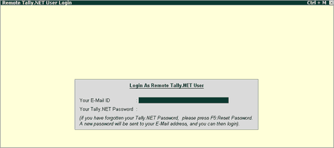

This feature can be used regardless of whether you have a licensed version of Tally or not.
Educational Version of Tally.ERP 9
To make access to Support Centre easy and affordable, an Educational version of Tally.ERP 9 has been included with Shoper 9 and gets installed along with Shoper.
Licensed Tally.ERP 9
If a Licensed Tally.ERP 9 is installed on the same network, you can access the Support Centre by invoking this licensed Tally.ERP 9 from the Shoper menu option. To enable this, you have to configure the Support.ini file available in the Shoper 9 application folder.
To access Support Centre in both cases:
How to reach: Help > Support Centre
The Tally.ERP 9 is opened and the Remote Tally.NET User Login screen is displayed.

In the Remote Tally.NET User Login screen,
Enter the Tally.NET ID in Your E-Mail ID field. Click here to know more about the login ID.
Enter the password in Your Tally.NET Password field.
Press Enter
Note: If the User ID (Tally.NET ID) is configured with more than one Account ID, the Select Account option along with the list of User Accounts pops up when you press Enter. Click here to view a sample.
• Select the required Account ID
The Support Centre screen is displayed.